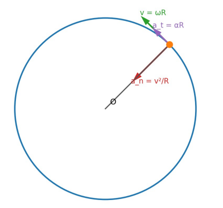
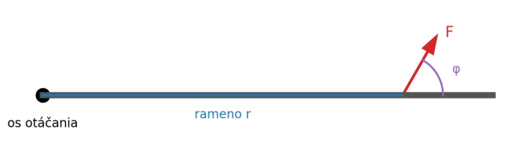
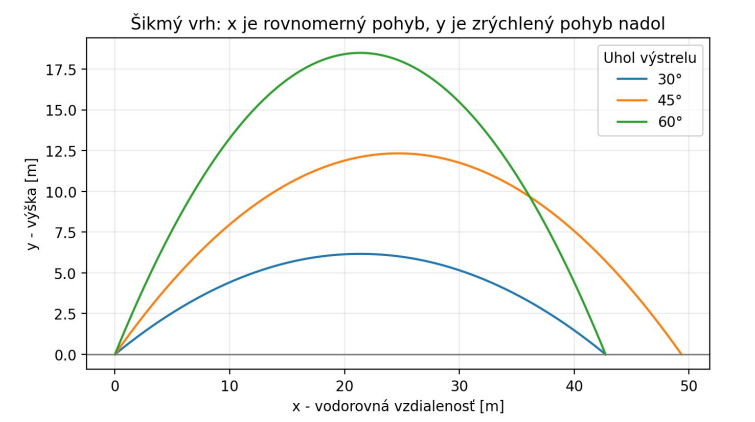
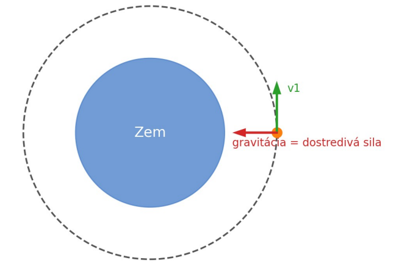
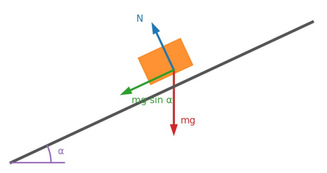
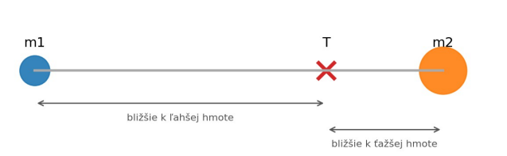
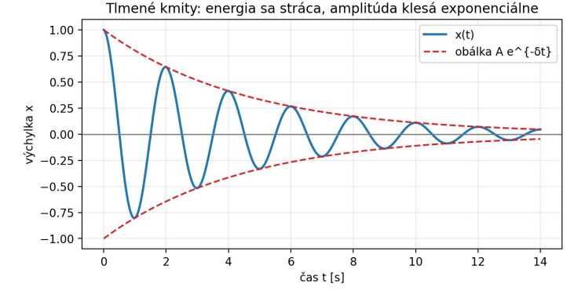
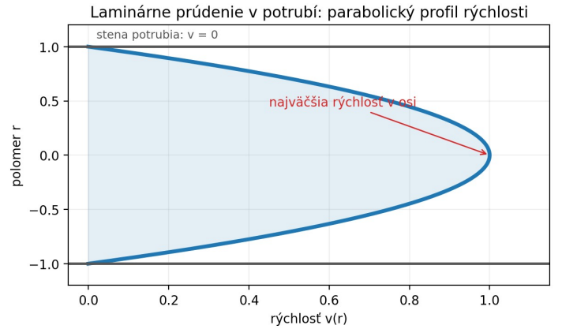
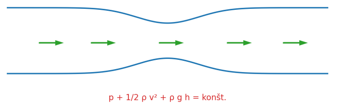
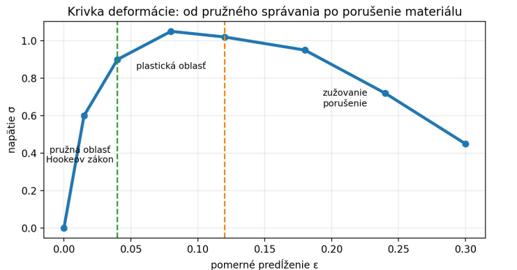

1. Nakresli náčrt:
Nakresli osi, teleso, sily, rýchlosti, zrýchlenie, kružnicu, prúdnicu alebo naklonenú rovinu. Náčrt často rozhoduje o bodoch.
Poznámky na skúšku z fyziky: vektory, kinematika, dynamika, práca a energia, hybnosť, rotačný pohyb, moment zotrvačnosti, Steinerova veta, matematické a fyzikálne kyvadlo a laboratórne merania.
Teóriu a vzorce označ ako naučené, laboratóriá a príklady ako urobené.
Skúšková stratégia
Fyzika nie je iba memorovanie vzorcov. Každá odpoveď má mať náčrt, základný zákon, pomenovanie veličín, úpravu vzťahu a kontrolu jednotiek.
Nakresli osi, teleso, sily, rýchlosti, zrýchlenie, kružnicu, prúdnicu alebo naklonenú rovinu. Náčrt často rozhoduje o bodoch.
Použi Newtonov zákon, zákon zachovania energie, impulzovú vetu, moment sily, rovnicu kontinuity alebo Bernoulliho rovnicu.
Napíš, čo znamená m, v, a, ω, ε, ρ, p, h, k, b, δ a aké majú jednotky.
Otáčky/min preveď na s-1, km/h na m/s, cm² na m² a kPa na Pa. Záporné zrýchlenie pri brzdení nie je chyba.
Okruhy skúška
Táto časť je prepísaná podľa okruhov ku skúške. Pri učení nestačí vedieť iba vzorce, treba vedieť vysvetliť význam veličín, nakresliť obrázok a stručne popísať fyzikálnu situáciu.
v = ds/dt
a = dv/dt
ω = Δφ/Δt
v = ωr
at = εr
an = v²/r = ω²r
f = 1/T
ω = 2πfF = ma
p = mv
I = FΔt = Δp
M = rF sin α
W = Fs cos α
P = W/t
Ek = 1/2 mv²
Ep = mghF = G m1m2/r²
g = GM/r²
vx = v0 cos α
vy = v0 sin α - gt
H = v0² sin²α / 2g
D = v0² sin 2α / gFt = f · FN
Ft,max = fs · FN
dynamické trenie: Ft = fd · FNrT = Σmiri / Σmi
Ek,trans = 1/2 mv²
Ek,rot = 1/2 Iω²
I = Σmiri²
M = Iε
I = I0 + md²x'' + ω0²x = 0
x = A sin(ωt + φ)
tlmené:
x'' + 2βx' + ω0²x = 0
vynútené:
x'' + 2βx' + ω0²x = F0/m · cos(Ωt)F = kx
σ = F/S
ε = Δl/l0
σ = Eεp = ρgh
Fvz = ρgV
S1v1 = S2v2
p + 1/2ρv² + ρgh = konšt.Stokesov zákon:
F = 6πηrv
Reynoldsovo číslo:
Re = ρvd/ηObrázky ku skúške
Pri teoretických otázkach a odvodeniach nestačí iba napísať vzorec. Veľmi často pomôže jednoduchý náčrt: sily, osi, smery vektorov, trajektória alebo graf. Tieto obrázky si skús prekresliť rukou na papier.

Čo nakresliť: kružnicu, polomer R, rýchlosť v po dotyčnici, normálové zrýchlenie an do stredu a tangenciálne zrýchlenie at po dotyčnici.
Vzťahy: v = ωR, at = εR, an = v²/R = ω²R.

Čo nakresliť: os otáčania, rameno r, silu F a uhol φ medzi ramenom a silou.
Vzťahy: M = r × F, |M| = rF sinφ. Moment je najväčší, keď sila pôsobí kolmo na rameno.

Čo nakresliť: trajektóriu vrhu, počiatočnú rýchlosť v0, uhol α, vodorovný smer x a zvislý smer y.
Vzťahy: x = v0cosα · t, y = v0sinα · t − 1/2gt², H = v0²sin²α/(2g), D = v0²sin2α/g.

Čo nakresliť: Zem, kruhovú dráhu, družicu, rýchlosť v1 po dotyčnici a gravitačnú silu smerom do stredu Zeme.
Myšlienka: gravitačná sila zabezpečuje dostredivú silu.
Vzťah: GMm/r² = mv²/r → v1 = √(GM/r).

Čo nakresliť: graf trecej sily v závislosti od pôsobiacej sily. Statické trenie rastie až po maximum, potom nastane šmyk a pôsobí dynamické trenie.
Vzťahy: Fs ≤ μsN, Fs,max = μsN, Fk = μkN.

Čo nakresliť: naklonenú rovinu, teleso, tiaž mg smerom nadol, normálovú silu N kolmo na rovinu a zložku mg sinα po rovine.
Vzťahy: N = mg cosα, zložka po rovine = mg sinα, trenie Ft = μmg cosα.

Čo nakresliť: dva hmotné body m1, m2, spojnicu medzi nimi a bod ťažiska T bližšie k ťažšej hmote.
Vzťah: rT = Σmiri / M. Ťažisko je hmotnostne vážený priemer polôh.

Čo nakresliť: kmitavý priebeh x(t), ktorého amplitúda postupne klesá. K tomu obálku e-δt.
Vzťahy: x'' + 2δx' + ω0²x = 0, x(t) = Ae-δtcos(ωt + φ).

Čo nakresliť: potrubie a parabolický profil rýchlosti. Pri stenách potrubia je rýchlosť nulová, v osi potrubia je najväčšia.
Dôležité v obrázku: ukáž, že kvapalina netečie všade rovnako rýchlo. Stredná vrstva sa pohybuje najrýchlejšie.
Vzťah: pri laminárnom prúdení v trubici platí Poiseuilleov vzťah Q = πR⁴Δp / (8ηl).

Čo nakresliť: potrubie so zúžením, smer prúdenia a prúdnicu. V užšej časti je rýchlosť väčšia a tlak menší.
Dôležité v obrázku: keď sa prierez zmenší, podľa kontinuity sa musí zvýšiť rýchlosť. Pri väčšej rýchlosti často klesá tlak.
Vzťah: p + 1/2ρv² + ρgh = konšt.

Čo nakresliť: graf napätia σ v závislosti od pomerného predĺženia ε. Na začiatku je pružná oblasť, potom plastická oblasť a nakoniec porušenie materiálu.
Dôležité v obrázku: v pružnej oblasti platí Hookeov zákon. Po prekročení medze pružnosti vzniká trvalá deformácia.
Vzťahy: σ = F/S, ε = Δl/l0, σ = Eε.

Čo nakresliť: graf amplitúdy v závislosti od pomeru budiacej frekvencie Ω/ω0. Pri malej hodnote tlmenia je vrchol vysoký a ostrý.
Dôležité v obrázku: najväčšia amplitúda vzniká pri frekvencii blízkej vlastnej frekvencii sústavy. Väčšie tlmenie znižuje maximum amplitúdy.
Vzťah: A(Ω) = (F0/m) / √((ω0² − Ω²)² + (2δΩ)²).
Odvodenia
Každé odvodenie je spravené ako samostatná otváracia časť. Najprv si skús odvodenie napísať sám na papier a až potom si otvor postup. Na skúške je dôležité vedieť logiku, fyzikálny význam, použité vzťahy a výsledný vzorec.
Odvoďte vzťah pre tangenciálne a normálové zrýchlenie pri pohybe po kružnici. Definujte uhlovú rýchlosť, uhlové zrýchlenie, periódu a frekvenciu.
Pri pohybe po kružnici je dĺžka oblúka:
s = rφRýchlosť je zmena dráhy za čas:
v = ds/dtDosadíme s = rφ:
v = d(rφ)/dtPolomer r je konštantný, preto ho môžeme vytknúť:
v = r · dφ/dtDefinícia uhlovej rýchlosti:
ω = dφ/dtPreto dostaneme vzťah medzi obvodovou a uhlovou rýchlosťou:
v = rωTangenciálne zrýchlenie mení veľkosť rýchlosti:
at = dv/dtDosadíme v = rω:
at = d(rω)/dtPolomer je konštantný:
at = r · dω/dtDefinícia uhlového zrýchlenia:
ε = dω/dtPreto:
at = rεNormálové zrýchlenie vzniká preto, že sa mení smer rýchlosti. Smeruje do stredu kružnice:
an = v²/rKeďže v = rω:
an = (rω)² / r
an = r²ω² / r
an = rω²Tangenciálne a normálové zrýchlenie sú na seba kolmé, preto celkové zrýchlenie je:
a = √(at² + an²)Perióda T je čas jednej otáčky. Frekvencia f je počet otáčok za sekundu:
f = 1/T
T = 1/fZa jednu otáčku prejde bod uhol 2π radiánov:
ω = 2π/T
ω = 2πfv = rω
at = rε
an = v²/r = rω²
a = √(at² + an²)
f = 1/T
ω = 2πf = 2π/TOdvoďte Newtonov gravitačný zákon z 3. Keplerovho zákona.
Pri pohybe planéty po kružnici musí pôsobiť dostredivá sila:
F = m v²/rObvodová rýchlosť planéty je:
v = 2πr/TDosadíme do sily:
F = m/r · (2πr/T)²Umocníme zátvorku:
F = m/r · 4π²r²/T²Upravíme:
F = 4π²mr/T²Z 3. Keplerovho zákona platí:
T²/r³ = KZ toho:
T² = Kr³Prevrátime:
1/T² = 1/(Kr³)Dosadíme do vzťahu pre silu:
F = 4π²mr · 1/(Kr³)Upravíme:
F = (4π²/K) · m/r²Z toho vidno, že sila je nepriamo úmerná druhej mocnine vzdialenosti:
F ~ 1/r²Konštanta závisí od centrálneho telesa. Pre centrálne teleso hmotnosti M sa zavádza gravitačná konštanta G:
4π²/K = GMPotom dostaneme Newtonov gravitačný zákon:
F = GMm/r²F = G · M · m / r²Gravitačná sila je priamo úmerná súčinu hmotností telies a nepriamo úmerná druhej mocnine ich vzdialenosti.
Odvoďte rovnice dráhy pohybu šikmého vrhu, maximálnu výšku a dolet.
Počiatočnú rýchlosť rozložíme na zložky:
v0x = v0 cosα
v0y = v0 sinαVo vodorovnom smere nepôsobí zrýchlenie, preto je pohyb rovnomerný:
x = v0x t
x = v0 cosα · tVo zvislom smere pôsobí tiažové zrýchlenie smerom nadol:
y = v0y t - 1/2 gt²
y = v0 sinα · t - 1/2 gt²Maximálna výška nastane vtedy, keď zvislá rýchlosť bude nulová:
vy = v0 sinα - gt
vy = 0
0 = v0 sinα - gt
tH = v0 sinα / gČas do maximálnej výšky dosadíme do rovnice pre y:
H = v0 sinα · tH - 1/2 g tH²
H = v0 sinα · (v0 sinα/g) - 1/2 g · (v0² sin²α/g²)
H = v0² sin²α/g - 1/2 · v0² sin²α/g
H = v0² sin²α / (2g)Pri dopade na rovnakú výšku ako štart platí y = 0:
0 = v0 sinα · t - 1/2 gt²Vytkneme t:
t(v0 sinα - 1/2 gt) = 0Riešenie t = 0 je začiatok. Druhé riešenie je čas letu:
v0 sinα - 1/2 gt = 0
tD = 2v0 sinα / gDolet je vodorovná dráha za čas letu:
D = v0 cosα · tD
D = v0 cosα · (2v0 sinα/g)
D = 2v0² sinα cosα / gPoužijeme trigonometrický vzťah:
sin(2α) = 2 sinα cosαDostaneme:
D = v0² sin(2α) / gx = v0 cosα · t
y = v0 sinα · t - 1/2 gt²
H = v0² sin²α / (2g)
D = v0² sin(2α) / gOdvoďte I. kozmickú rýchlosť a II. kozmickú rýchlosť.
Gravitačná sila pôsobiaca na teleso pri povrchu Zeme je:
Fg = GMm/R²Pri kruhovom obehu je potrebná dostredivá sila:
Fd = mv²/RGravitačná sila zabezpečuje dostredivú silu:
Fg = FdDosadíme:
GMm/R² = mv²/RVykrátime m:
GM/R² = v²/RVynásobíme R:
GM/R = v²Odmocníme:
v1 = √(GM/R)Keďže g = GM/R², potom GM/R = gR:
v1 = √(gR)Na opustenie gravitačného poľa musí byť celková mechanická energia aspoň nulová.
Kinetická energia na povrchu:
Ek = 1/2 mv²Gravitačná potenciálna energia:
Ep = -GMm/RHraničný únikový prípad:
Ek + Ep = 0Dosadíme:
1/2 mv² - GMm/R = 0Presunieme člen:
1/2 mv² = GMm/RVykrátime m:
1/2 v² = GM/RVynásobíme dvomi:
v² = 2GM/ROdmocníme:
v2 = √(2GM/R)Keďže v1 = √(GM/R), platí:
v2 = √2 · v1I. kozmická rýchlosť:
v1 = √(GM/R) = √(gR)
II. kozmická rýchlosť:
v2 = √(2GM/R) = √2 · v1I. kozmická rýchlosť je rýchlosť pre kruhový obeh okolo Zeme. II. kozmická rýchlosť je úniková rýchlosť.
Odvoďte polohový vektor ťažiska sústavy hmotných bodov a tuhého telesa.
Celková hmotnosť sústavy je:
M = m1 + m2 + ... + mnŤažisko je vážený priemer polôh:
rT = (m1r1 + m2r2 + ... + mnrn) / MPomocou sumy:
rT = (Σ mi ri) / MKde:
M = Σ miV súradniciach:
xT = (Σ mi xi) / M
yT = (Σ mi yi) / M
zT = (Σ mi zi) / MTuhé teleso si predstavíme ako zložené z nekonečne veľa malých častí hmotnosti dm.
Vzťah pre hmotné body bol:
rT = (Σ mi ri) / MPri spojitom telese prejde suma na integrál:
Σ mi ri → ∫ r dmPreto:
rT = (1/M) ∫ r dmCelková hmotnosť je:
M = ∫ dmAk je hustota rovnomerná, dm = ρdV:
rT = (1/M) ∫ r ρ dVAk je ρ konštantná:
rT = (1/V) ∫ r dVhmotné body:
rT = (Σ mi ri) / M
tuhé teleso:
rT = (1/M) ∫ r dm
súradnice:
xT = (1/M) ∫ x dm
yT = (1/M) ∫ y dm
zT = (1/M) ∫ z dmOdvoďte vzťahy pre kinetickú energiu translačného a rotačného pohybu tuhého telesa.
Kinetická energia i-tej časti telesa:
Eki = 1/2 mi v²Pri translácii majú všetky časti rovnakú rýchlosť v:
Ek = Σ 1/2 mi v²Vytkneme 1/2 a v²:
Ek = 1/2 v² Σ miSúčet hmotností je celková hmotnosť M:
Σ mi = MPreto:
Ek = 1/2 Mv²Pri rotácii má i-ta časť rýchlosť:
vi = ωriKinetická energia i-tej časti:
Eki = 1/2 mi vi²Dosadíme vi = ωri:
Eki = 1/2 mi (ωri)²Umocníme:
Eki = 1/2 mi ω² ri²Sčítame cez celé teleso:
Ek = Σ 1/2 mi ω² ri²Vytkneme 1/2 a ω²:
Ek = 1/2 ω² Σ mi ri²Súčet je moment zotrvačnosti:
I = Σ mi ri²Preto:
Ek = 1/2 Iω²translačný pohyb:
Ek = 1/2 Mv²
rotačný pohyb:
Ek = 1/2 Iω²
moment zotrvačnosti:
I = Σ mi ri²Odvoďte I. vetu impulzovú pre pohyb ťažiska.
Pre jeden hmotný bod platí 2. Newtonov zákon:
F = maZrýchlenie je derivácia rýchlosti:
a = dv/dtDosadíme:
F = m dv/dtAk je hmotnosť konštantná:
F = d(mv)/dtHybnosť je:
p = mvPreto:
F = dp/dtPre sústavu hmotných bodov je celková hybnosť:
P = Σ mi viRýchlosť ťažiska je:
vT = (Σ mi vi) / MVynásobíme M:
MvT = Σ mi viPravá strana je celková hybnosť sústavy:
P = MvTVýsledná vonkajšia sila je časová zmena celkovej hybnosti:
Fvonk = dP/dtDosadíme P = MvT:
Fvonk = d(MvT)/dtPri konštantnej hmotnosti M:
Fvonk = M dvT/dtKeďže:
aT = dvT/dtDostaneme:
Fvonk = MaTFvonk = dP/dt
P = MvT
Fvonk = MaTŤažisko sústavy sa pohybuje tak, ako keby v ňom bola sústredená celá hmotnosť a pôsobila naň výslednica vonkajších síl.
Odvoďte Steinerovu vetu.
Moment zotrvačnosti sústavy hmotných bodov je:
I = Σ mi ri²Nech poznáme moment zotrvačnosti vzhľadom na os prechádzajúcu ťažiskom:
I0 = Σ mi ri²Nová os je rovnobežná a posunutá o vzdialenosť d.
Vzdialenosť i-teho bodu od novej osi môžeme zapísať:
Ri² = ri² + d² + 2d xiMoment zotrvačnosti vzhľadom na novú os:
I = Σ mi Ri²Dosadíme:
I = Σ mi(ri² + d² + 2d xi)Rozdelíme sumy:
I = Σ mi ri² + Σ mi d² + Σ mi 2d xiKonštanty vytkneme:
I = Σ mi ri² + d²Σ mi + 2dΣ mi xiPrvý člen je I0:
Σ mi ri² = I0Druhý člen obsahuje celkovú hmotnosť:
Σ mi = MTretí člen je nulový, pretože počiatok je v ťažisku:
Σ mi xi = 0Preto ostane:
I = I0 + Md²I = I0 + Md²Moment zotrvačnosti vzhľadom na posunutú rovnobežnú os je väčší o člen Md².
Odvoďte pohybovú rovnicu harmonických netlmených kmitov a jej riešenie.
Pružná sila pružiny je:
F = -kxZnamienko mínus znamená, že sila smeruje proti výchylke.
Podľa 2. Newtonovho zákona:
F = maZrýchlenie je druhá derivácia výchylky:
a = x''Dosadíme:
mx'' = -kxPresunieme všetko na jednu stranu:
mx'' + kx = 0Vydelíme m:
x'' + (k/m)x = 0Zavedieme vlastnú uhlovú frekvenciu:
ω0² = k/mDostaneme pohybovú rovnicu:
x'' + ω0²x = 0Riešením je harmonická funkcia:
x(t) = A sin(ω0t + φ)Alebo:
x(t) = C1 cos(ω0t) + C2 sin(ω0t)Perióda:
T = 2π/ω0x'' + ω0²x = 0
ω0 = √(k/m)
x(t) = A sin(ω0t + φ)
T = 2π/ω0Odvoďte pohybovú rovnicu harmonických tlmených kmitov a jej riešenie.
Pružná sila je:
Fp = -kxTlmiaca sila je úmerná rýchlosti a pôsobí proti pohybu:
Ft = -bvKeďže v = x':
Ft = -bx'Výsledná sila:
F = Fp + FtDosadíme:
F = -kx - bx'Podľa 2. Newtonovho zákona:
mx'' = -kx - bx'Presunieme všetko na jednu stranu:
mx'' + bx' + kx = 0Vydelíme m:
x'' + (b/m)x' + (k/m)x = 0Zavedieme:
2β = b/m
ω0² = k/mDostaneme:
x'' + 2βx' + ω0²x = 0Pre slabé tlmenie je riešenie:
x(t) = A e^(-βt) sin(ωt + φ)Uhlová frekvencia tlmených kmitov:
ω = √(ω0² - β²)Člen e-βt spôsobuje zmenšovanie amplitúdy.
x'' + 2βx' + ω0²x = 0
2β = b/m
ω0² = k/m
x(t) = A e^(-βt) sin(ωt + φ)
ω = √(ω0² - β²)Odvoďte amplitúdu vynútených kmitov a z nej podmienku rezonancie. Charakterizujte rezonanciu.
Na teleso pôsobí pružná, tlmiaca a vonkajšia periodická sila:
F = -kx - bx' + F0 sin(Ωt)Podľa 2. Newtonovho zákona:
mx'' = -kx - bx' + F0 sin(Ωt)Upravíme:
mx'' + bx' + kx = F0 sin(Ωt)Vydelíme m:
x'' + (b/m)x' + (k/m)x = (F0/m) sin(Ωt)Zavedieme:
2β = b/m
ω0² = k/m
f0 = F0/mDostaneme rovnicu:
x'' + 2βx' + ω0²x = f0 sin(Ωt)V ustálenom stave kmitá sústava s frekvenciou vonkajšej sily Ω. Predpokladáme riešenie:
x = A sin(Ωt - δ)Po dosadení do rovnice a porovnaní sínusovej a kosínusovej zložky dostaneme:
A(ω0² - Ω²) = f0 cosδ
2βΩA = f0 sinδObe rovnice umocníme a sčítame:
A²(ω0² - Ω²)² + A²(2βΩ)² =
f0²(cos²δ + sin²δ)Keďže cos²δ + sin²δ = 1:
A²[(ω0² - Ω²)² + (2βΩ)²] = f0²Pre amplitúdu:
A = f0 / √[(ω0² - Ω²)² + (2βΩ)²]Keďže f0 = F0/m:
A = (F0/m) / √[(ω0² - Ω²)² + (2βΩ)²]Rezonancia nastane vtedy, keď je amplitúda maximálna. To znamená, že menovateľ je minimálny.
Menovateľ bez odmocniny označíme:
D = (ω0² - Ω²)² + 4β²Ω²Minimum nájdeme deriváciou podľa Ω. Výsledná rezonančná frekvencia je:
Ωr = √(ω0² - 2β²)Ak je tlmenie veľmi malé, β ≈ 0, potom:
Ωr ≈ ω0Rezonancia je jav, keď vonkajšia sila pôsobí s frekvenciou blízkou vlastnej frekvencii sústavy a amplitúda prudko narastá.
x'' + 2βx' + ω0²x = f0 sin(Ωt)
A = f0 / √[(ω0² - Ω²)² + (2βΩ)²]
A = (F0/m) / √[(ω0² - Ω²)² + (2βΩ)²]
Ωr = √(ω0² - 2β²)
pri malom tlmení:
Ωr ≈ ω0Odvoďte Bernoulliho rovnicu a vysvetlite význam jej členov.
Uvažujeme objem kvapaliny V, ktorý sa presunie z miesta 1 do miesta 2.
Práca tlakovej sily v mieste 1:
W1 = p1VV mieste 2 kvapalina koná prácu proti tlaku:
W2 = p2VCelková práca tlakových síl:
W = p1V - p2VTáto práca sa rovná zmene mechanickej energie kvapaliny.
Kinetická energia v mieste 1:
Ek1 = 1/2 mv1²Kinetická energia v mieste 2:
Ek2 = 1/2 mv2²Potenciálna energia v mieste 1:
Ep1 = mgh1Potenciálna energia v mieste 2:
Ep2 = mgh2Zákon zachovania energie:
p1V - p2V =
(1/2 mv2² + mgh2) - (1/2 mv1² + mgh1)Upravíme tak, aby veličiny v bode 1 boli na jednej strane a v bode 2 na druhej:
p1V + 1/2 mv1² + mgh1 =
p2V + 1/2 mv2² + mgh2Hmotnosť kvapaliny vyjadríme cez hustotu:
m = ρVDosadíme:
p1V + 1/2 ρVv1² + ρVgh1 =
p2V + 1/2 ρVv2² + ρVgh2Celú rovnicu vydelíme objemom V:
p1 + 1/2 ρv1² + ρgh1 =
p2 + 1/2 ρv2² + ρgh2Pre ľubovoľné miesto v prúdnici:
p + 1/2 ρv² + ρgh = konšt.p + 1/2 ρv² + ρgh = konšt.p je tlaková energia na jednotku objemu, 1/2ρv² je kinetická energia na jednotku objemu a ρgh je potenciálna energia na jednotku objemu.
Vzorová skúšková písomka
Otázky z skúškových písomiek. Každá písomka má 5 úloh. Každá úloha je cca za 16 bodov.
Napíšte Keplerove zákony, vzťah pre Newtonov gravitačný zákon, intenzitu gravitačného poľa a prácu v gravitačnom poli, potenciál gravitačného poľa v gravitačnom poli. Čo vyjadruje I. a II. kozmická rýchlosť? (16)
Napíšte vzťahy pre tangenciálne, normálové a celkové zrýchlenie a načrtnite ich na kružnici. Definujte vzťahmi uhlovú rýchlosť a uhlové zrýchlenie, periódu a frekvenciu. Napíšte vektorový vzťah medzi uhlovou a obvodovou rýchlosťou. (16)
Načrtnite polohový vektor ťažiska dvoch hmotných bodov, napíšte vzťahy pre polohový vektor, rýchlosť a zrýchlenie ťažiska. Napíšte vzťah pre kinetickú energiu translačného a rotačného pohybu tuhého telesa a moment zotrvačnosti sústavy hmotných bodov. (16)
Odvoďte rovnice dráhy pohybu šikmého vrhu, výšku a dolet. (17)
Koleso otáčajúce sa rýchlosťou 500 ot/min sa vplyvom trenia zastaví, pričom vykoná ešte 500 otáčok. Za aký čas sa koleso zastaví a aké bude pritom jeho uhlové zrýchlenie? (16)
Napíšte Keplerove zákony a Newtonov gravitačný zákon. Vzťahom vyjadrite intenzitu gravitačného poľa v radiálnom poli, prácu v gravitačnom poli a potenciál gravitačného poľa v radiálnom poli. (16)
Napíšte vzťahy pre polohový vektor, vektor rýchlosti a zrýchlenia. Definujte vzťahmi uhlovú rýchlosť a uhlové zrýchlenie a napíšte vektorové vzťahy medzi uhlovou a obvodovou rýchlosťou. Načrtnite pohyb na kružnici aj s naznačením týchto veličín. (16)
Napíšte pohybovú rovnicu harmonických tlmených kmitov a jej riešenie. Ukážte, čo je koeficient útlmu. Načrtnite časový priebeh tlmeného kmitu. (16)
Odvoďte polohový vektor ťažiska sústavy hmotných bodov a tuhého telesa. (16)
Hmotný bod koná pohyb po kružnici s polomerom R = 10 cm so stálym uhlovým zrýchlením 4 s-2. Vypočítajte hodnotu tangenciálneho, normálového a celkového zrýchlenia na konci 5. sekundy od začiatku pohybu, keď v čase t = 0 s bol v pokoji. (16)
Odvoďte I. kozmickú rýchlosť. (16)
Charakterizujte na obrázku aj vzťahom silu kĺzavého trenia pre statické trenie. Vysvetlite sily pôsobiace na naklonenej rovine a ukážte, ako z naklonenej roviny určíme koeficient kĺzavého trenia. (15)
Načrtnite polohový vektor ťažiska dvoch hmotných bodov, ako aj jednotlivé vektory. Vyjadrite ho vzťahom a popíšte veličiny. (15)
Odvoďte I. vetu impulzovú pre pohyb ťažiska. (17)
Analýzou záznamu tachografu vozidla bolo zistené, že vozidlo z pôvodnej rýchlosti 90 km·h-1 brzdilo podľa časovej závislosti v = v0 − bt2 a zastavilo za čas 16 s. Na akej dráhe vozidlo zastavilo a akú maximálnu hodnotu dosiahla veľkosť zrýchlenia počas pohybu? (16)
Odvoďte pohybovú rovnicu harmonických tlmených kmitov a jej riešenie. (18)
Napíšte Bernoulliho rovnicu s vysvetlením veličín a uveďte aspoň 2 príklady využitia Bernoulliho rovnice v praxi. (15)
Príklady skúška
Najprv si skús napísať rovnice a riešenie zakry. Potom otvor konkrétny príklad a porovnaj postup. Pri každom príklade sleduj hlavne jednotky. Výpočty sú prekontrolované.
Koleso sa otáča frekvenciou 600 otáčok za minútu. Vplyvom trenia sa zastaví, pričom vykoná ešte 500 otáčok. Za aký čas sa zastaví a aké bude uhlové zrýchlenie?
Pri rovnomerne spomalenom otáčaní platí:
ω² = ω0² + 2εφDosadíme konečnú uhlovú rýchlosť ω = 0:
0 = (20π)² + 2ε(1000π)
0 = 400π² + 2000πε
ε = -400π² / 2000π
ε = -π/5 rad/s²
ε ≈ -0,628 rad/s²Čas zastavenia určíme zo vzťahu:
ω = ω0 + εt
0 = 20π - (π/5)t
(π/5)t = 20π
t = 100 sKontrola: priemerná uhlová rýchlosť je (20π + 0)/2 = 10π rad/s a za 100 s prejde uhlovú dráhu 1000π rad, teda 500 otáčok.
Koleso sa zastaví za t = 100 s. Uhlové zrýchlenie je ε ≈ -0,628 rad/s². Záporné znamienko znamená brzdenie.
Teleso je vystrelené rýchlosťou 20 m/s pod uhlom 30°. Urč maximálnu výšku a dolet pri rovnakej počiatočnej a konečnej výške. Odpor vzduchu zanedbaj.
Maximálna výška:
H = v0² sin²α / (2g)
sin 30° = 0,5
H = 20² · 0,5² / (2 · 9,81)
H = 100 / 19,62
H ≈ 5,10 mDolet:
D = v0² sin(2α) / g
D = 20² · sin 60° / 9,81
sin 60° ≈ 0,866
D ≈ 400 · 0,866 / 9,81
D ≈ 35,3 mH ≈ 5,10 m, D ≈ 35,3 m.
Tri hmotné body majú hmotnosti m1 = 2 kg, m2 = 3 kg, m3 = 5 kg a polohy r1 = (0, 0) m, r2 = (4, 0) m, r3 = (0, 6) m. Urč polohu ťažiska.
xT = (2·0 + 3·4 + 5·0) / 10
xT = 12 / 10
xT = 1,2 m
yT = (2·0 + 3·0 + 5·6) / 10
yT = 30 / 10
yT = 3,0 mŤažisko je bližšie k tretiemu bodu, lebo má najväčšiu hmotnosť.
rT = (1,2; 3,0) m.
Sila F = (2, 1, 0) N pôsobí v bode B = (1, -1, -1) m. Moment sily urč vzhľadom na bod A = (-2, 1, -1) m.
Použijeme vektorový súčin:
M = r × F
r = (3, -2, 0)
F = (2, 1, 0)
Mx = ryFz - rzFy = (-2)·0 - 0·1 = 0
My = rzFx - rxFz = 0·2 - 3·0 = 0
Mz = rxFy - ryFx = 3·1 - (-2)·2 = 3 + 4 = 7Smer momentu je v kladnom smere osi z.
M = (0, 0, 7) N·m.
Teleso hmotnosti 4 kg je na naklonenej rovine s uhlom 20°. Koeficient dynamického trenia je μ = 0,15. Urč zrýchlenie pri pohybe nadol po rovine.
Zložka tiaže po rovine:
Fg,rovina = mg sinαNormálová sila:
N = mg cosαTrecia sila proti pohybu:
Ft = μN = μmg cosαVýsledná sila po rovine:
F = mg sinα - μmg cosαZrýchlenie:
a = F/m = g(sinα - μcosα)
a = 9,81(sin20° - 0,15cos20°)
a = 9,81(0,342 - 0,15·0,940)
a = 9,81(0,342 - 0,141)
a ≈ 1,97 m/s²a ≈ 1,97 m/s² smerom nadol po rovine.
Teleso hmotnosti 0,50 kg je zavesené na pružine s tuhosťou 80 N/m. Urč uhlovú frekvenciu a periódu kmitov.
ω0 = √(k/m)
ω0 = √(80/0,50)
ω0 = √160
ω0 ≈ 12,65 rad/s
T = 2π/ω0
T = 2π/12,65
T ≈ 0,497 sČím väčšia tuhosť k, tým rýchlejšie kmity. Čím väčšia hmotnosť m, tým pomalšie kmity.
ω0 ≈ 12,65 rad/s, T ≈ 0,50 s.
Voda tečie vodorovným potrubím. Prierez sa zmenší zo S1 = 6 cm² na S2 = 2 cm². V širšej časti je rýchlosť v1 = 1 m/s a tlak p1 = 150 kPa. Urč rýchlosť v2 a tlak p2. Hustota vody ρ = 1000 kg/m³.
Rovnica kontinuity:
S1v1 = S2v2
v2 = S1v1/S2
v2 = 6·1/2
v2 = 3 m/sBernoulliho rovnica pre vodorovné potrubie:
p1 + 1/2ρv1² = p2 + 1/2ρv2²
p2 = p1 + 1/2ρ(v1² - v2²)
p2 = 150000 + 0,5·1000(1² - 3²)
p2 = 150000 + 500(1 - 9)
p2 = 150000 - 4000
p2 = 146000 Pav2 = 3 m/s, p2 = 146 kPa. V zúžení je rýchlosť väčšia a tlak menší.
Príklady z cvičení
Toto sú príklady z cvičení. Každý príklad je v samostatnej otváracej časti. Najprv si skús príklad vypočítať sám a až potom otvor riešenie.
Cyklista sa pohybuje rýchlosťou 3 m·s-1 z bodu A do bodu B, v bode B sa otočí a vracia sa naspäť do bodu A rýchlosťou 12 m·s-1. Vypočítajte priemernú rýchlosť cyklistu.
t1 = s / v1
t2 = s / v2
t = t1 + t2
t = s/v1 + s/v2
vp = celková dráha / celkový čas
vp = 2s / (s/v1 + s/v2)
vp = 2s / (s/3 + s/12)
s/3 + s/12 = 4s/12 + s/12 = 5s/12
vp = 2s / (5s/12)
vp = 2s · 12/(5s)
vp = 24/5
vp = 4,8 m·s⁻¹Priemerná rýchlosť cyklistu je vp = 4,8 m·s-1.
Auto sa rozbieha z pokoja s konštantným zrýchlením 1,5 m·s-2, kým nedosiahne rýchlosť 30 m·s-1. Touto rýchlosťou sa pohybuje 10 s a nakoniec zastavuje so zrýchlením -5 m·s-2. Akú dráhu auto prešlo a aká bola jeho priemerná rýchlosť?
1. fáza – rozbeh:
v = v0 + at
30 = 0 + 1,5t1
t1 = 30 / 1,5
t1 = 20 s
s1 = v0t + 1/2 at²
s1 = 0·20 + 1/2 · 1,5 · 20²
s1 = 0,75 · 400
s1 = 300 m
2. fáza – rovnomerný pohyb:
s2 = vt
s2 = 30 · 10
s2 = 300 m
3. fáza – brzdenie:
v = v0 + at
0 = 30 - 5t3
t3 = 6 s
s3 = v0t + 1/2 at²
s3 = 30·6 + 1/2 · (-5) · 6²
s3 = 180 - 90
s3 = 90 m
Celková dráha:
s = s1 + s2 + s3
s = 300 + 300 + 90
s = 690 m
Celkový čas:
t = t1 + t2 + t3
t = 20 + 10 + 6
t = 36 s
Priemerná rýchlosť:
vp = s/t
vp = 690/36
vp ≈ 19,2 m·s⁻¹Auto prešlo 690 m a jeho priemerná rýchlosť bola 19,2 m·s-1.
Auto spomaľuje z rýchlosti 90 km·h-1 na 72 km·h-1, pričom prejde dráhu 200 m. Vypočítajte zrýchlenie auta.
v² = v0² + 2as
a = (v² - v0²) / (2s)
a = (20² - 25²) / (2 · 200)
a = (400 - 625) / 400
a = -225 / 400
a = -0,5625 m·s⁻²Zrýchlenie auta je a = -0,5625 m·s-2.
Rýchlosť auta sa menila podľa vzťahu v(t) = -t² + 2t + 10. Určte rýchlosť a zrýchlenie v čase t = 2 s, dráhu za prvé 4 s a dráhu medzi 2. a 4. sekundou.
Okamžitá rýchlosť:
v(2) = -(2)² + 2·2 + 10
v(2) = -4 + 4 + 10
v(2) = 10 m·s⁻¹
Zrýchlenie:
a(t) = dv/dt
a(t) = d/dt (-t² + 2t + 10)
a(t) = -2t + 2
a(2) = -2·2 + 2
a(2) = -2 m·s⁻²
Dráha:
s(t) = ∫ v(t) dt
s(t) = ∫(-t² + 2t + 10) dt
s(t) = -t³/3 + t² + 10t
s(4) = -4³/3 + 4² + 10·4
s(4) = -64/3 + 16 + 40
s(4) = -64/3 + 56
s(4) = 104/3
s(4) ≈ 34,67 m
Dráha medzi 2. a 4. sekundou:
s(2) = -2³/3 + 2² + 10·2
s(2) = -8/3 + 4 + 20
s(2) = -8/3 + 24
s(2) = 64/3
s(4) - s(2) = 104/3 - 64/3
s(4) - s(2) = 40/3
s(4) - s(2) ≈ 13,33 mv(2) = 10 m·s-1, a(2) = -2 m·s-2, s(0–4) ≈ 34,67 m, s(2–4) ≈ 13,33 m.
Vozidlo sa z pokoja rozbiehalo so zrýchlením, ktoré z počiatočnej hodnoty 1,5 m·s-2 rovnomerne klesalo až na nulu za 30 s. Akú dráhu prešlo a akú rýchlosť dosiahlo?
a(t) = a0 + kt
a(t) = 1,5 + kt
0 = 1,5 + k·30
k = -1,5/30
k = -0,05
a(t) = 1,5 - 0,05t
Rýchlosť:
v(t) = ∫ a(t) dt
v(t) = ∫(1,5 - 0,05t) dt
v(t) = 1,5t - 0,025t²
v(30) = 1,5·30 - 0,025·30²
v(30) = 45 - 22,5
v(30) = 22,5 m·s⁻¹
Dráha:
s(t) = ∫ v(t) dt
s(t) = ∫(1,5t - 0,025t²) dt
s(t) = 0,75t² - (0,025/3)t³
s(30) = 0,75·30² - (0,025/3)·30³
s(30) = 675 - 225
s(30) = 450 mVozidlo dosiahne rýchlosť 22,5 m·s-1 a prejde dráhu 450 m.
Z povrchu Zeme začne stúpať teplovzdušný balón so zrýchlením 2 m·s-2. Po 10 s letu sa z koša balóna uvoľní vrecko s pieskom. Vypočítajte, do akej výšky vrecko vystúpi a za aký čas dopadne na Zem.
Rýchlosť balóna pri uvoľnení:
v1 = a t1
v1 = 2 · 10
v1 = 20 m·s⁻¹
Výška balóna pri uvoľnení:
h1 = 1/2 a t1²
h1 = 1/2 · 2 · 10²
h1 = 100 m
Maximálna výška vrecka:
v² = v1² - 2g(hmax - h1)
0 = 20² - 2·9,81(hmax - 100)
400 = 19,62(hmax - 100)
hmax = 400/19,62 + 100
hmax ≈ 120,4 m
Čas výstupu po uvoľnení:
t_výstup = v1/g
t_výstup = 20/9,81
t_výstup ≈ 2,04 s
Čas pádu z maximálnej výšky:
hmax = 1/2 g t_pád²
t_pád = √(2hmax/g)
t_pád = √(2·120,4/9,81)
t_pád ≈ 4,96 s
Čas od uvoľnenia po dopad:
t = 2,04 + 4,96
t ≈ 7,0 sVrecko vystúpi do výšky 120,4 m. Na zem dopadne približne 7,0 s po uvoľnení.
V akej vodorovnej vzdialenosti od miesta dopadu má lietadlo vypustiť náklad, ak letí rovnobežne s povrchom Zeme rýchlosťou 540 km·h-1 vo výške 1962 m?
Čas pádu:
h = 1/2 gt²
t = √(2h/g)
t = √(2·1962/9,81)
t = √400
t = 20 s
Vodorovná vzdialenosť:
d = vt
d = 150 · 20
d = 3000 mLietadlo má vypustiť náklad približne 3000 m, teda 3,0 km pred miestom dopadu.
Delová guľa je vystrelená pod uhlom 55° rýchlosťou 1000 m·s-1. Vypočítajte maximálny dostrel bez odporu vzduchu a maximálnu výšku.
Dostrel:
D = v0² sin(2α) / g
D = 1000² · sin(110°) / 9,81
D ≈ 1 000 000 · 0,9397 / 9,81
D ≈ 95 800 m
D ≈ 95,8 km
Maximálna výška:
H = v0² sin²α / (2g)
H = 1000² · sin²(55°) / (2·9,81)
H ≈ 1 000 000 · 0,671 / 19,62
H ≈ 34 200 m
H ≈ 34,2 kmDostrel je približne 95,8 km a maximálna výška približne 34,2 km.
Teleso voľne padá z výšky h = 245 m. Rozdeľte túto výšku na n = 5 úsekov tak, aby čas pádu v každom úseku bol rovnaký.
Celkový čas pádu:
h = 1/2 gT²
T = √(2h/g)
T = √(2·245/9,81)
T ≈ √49,95
T ≈ 7,07 s
Dĺžka jedného časového intervalu:
Δt = T/n
Δt = 7,07/5
Δt ≈ 1,414 s
Výšky prejdené od začiatku:
h1 ≈ 9,81 m
h2 ≈ 39,24 m
h3 ≈ 88,29 m
h4 ≈ 157,01 m
h5 ≈ 245,00 m
Jednotlivé úseky:
Δh1 = h1 = 9,81 m
Δh2 = h2 - h1 = 39,24 - 9,81 = 29,43 m
Δh3 = h3 - h2 = 88,29 - 39,24 = 49,05 m
Δh4 = h4 - h3 = 157,01 - 88,29 = 68,72 m
Δh5 = h5 - h4 = 245 - 157,01 = 87,99 mVýšku treba rozdeliť približne na úseky: 9,81 m; 29,43 m; 49,05 m; 68,72 m; 87,99 m.
Koleso otáčajúce sa s frekvenciou 600 ot/min sa vplyvom trenia zastaví, pričom vykoná ešte 500 otáčok. Za aký čas sa koleso zastaví a aké bude jeho uhlové zrýchlenie?
Uhlové zrýchlenie:
ω2² = ω1² + 2εθ
0 = (20π)² + 2ε(1000π)
0 = 400π² + 2000πε
ε = -400π² / 2000π
ε = -π/5 rad·s⁻²
ε ≈ -0,628 rad·s⁻²
Čas zastavenia:
ω2 = ω1 + εt
0 = 20π - (π/5)t
(π/5)t = 20π
t = 100 sKoleso sa zastaví za 100 s. Uhlové zrýchlenie je ε = -π/5 rad·s-2 ≈ -0,628 rad·s-2.
Koleso sa otáča s frekvenciou f = 25 s-1. Rovnomerne sa spomaľuje a zastaví sa za čas 30 s. Vypočítajte uhlové zrýchlenie a počet otáčok.
ω1 = 2πf
ω1 = 2π · 25
ω1 = 50π rad·s⁻¹
Uhlové zrýchlenie:
ω2 = ω1 + εt
0 = 50π + ε · 30
ε = -50π/30
ε = -5π/3 rad·s⁻²
Počet otáčok:
ω2² = ω1² + 2εθ
0 = (50π)² + 2(-5π/3)θ
0 = 2500π² - (10π/3)θ
(10π/3)θ = 2500π²
θ = 750π rad
N = θ/(2π)
N = 750π/(2π)
N = 375 otáčokUhlové zrýchlenie je ε = -5π/3 rad·s-2 a koleso vykoná 375 otáčok.
Hmotný bod sa pohybuje po kružnici s polomerom R = 10 cm so stálym uhlovým zrýchlením 4 s-2. Vypočítajte tangenciálne, normálové a celkové zrýchlenie na konci 5. sekundy, ak v čase t = 0 s bol v pokoji.
Uhlová rýchlosť po 5 sekundách:
ω = ω0 + εt
ω = 0 + 4·5
ω = 20 rad·s⁻¹
Tangenciálne zrýchlenie:
at = rε
at = 0,1 · 4
at = 0,4 m·s⁻²
Normálové zrýchlenie:
an = rω²
an = 0,1 · 20²
an = 0,1 · 400
an = 40 m·s⁻²
Celkové zrýchlenie:
a = √(at² + an²)
a = √(0,4² + 40²)
a = √(0,16 + 1600)
a ≈ 40,00 m·s⁻²at = 0,4 m·s-2, an = 40 m·s-2, a ≈ 40,00 m·s-2.
Teleso sa začína otáčať okolo pevnej osi s konštantným uhlovým zrýchlením ε = 0,04 s-2. V akom čase bude celkové zrýchlenie bodu zvierať uhol 76° s rýchlosťou toho istého bodu?
at = rε
an = rω²
ω = εt
Uhol medzi celkovým zrýchlením a rýchlosťou:
tan α = an / at
tan α = rω² / (rε)
tan α = ω²/ε
tan α = (εt)²/ε
tan α = εt²
Vyjadríme čas:
t² = tan α / ε
t² = tan 76° / 0,04
t² = 4,01078 / 0,04
t² = 100,2695
t ≈ 10,01 sHľadaný čas je približne t = 10,01 s.
Na hmotný bod s hmotnosťou 2 kg pôsobia sily F1 = (3, 2, -4) N, F2 = (2, -6, -2) N, F3 = (7, 0, 1) N. Vypočítajte jeho zrýchlenie a veľkosť zrýchlenia.
Výsledná sila:
Fx = 3 + 2 + 7 = 12 N
Fy = 2 + (-6) + 0 = -4 N
Fz = -4 + (-2) + 1 = -5 N
F = (12, -4, -5) N
Zrýchlenie:
a = F/m
a = (12, -4, -5)/2
a = (6, -2, -2,5) m·s⁻²
Veľkosť zrýchlenia:
|a| = √(6² + (-2)² + (-2,5)²)
|a| = √(36 + 4 + 6,25)
|a| = √46,25
|a| ≈ 6,8 m·s⁻²Zrýchlenie je a = (6, -2, -2,5) m·s-2 a jeho veľkosť je |a| ≈ 6,8 m·s-2.
Na teleso pôsobí sila F = 5 N. Pri posunutí d = 3 m sa vykoná práca W = 9 J. Vypočítajte uhol α medzi silou a smerom posunutia.
W = F d cos α
9 = 5 · 3 · cos α
9 = 15 cos α
cos α = 9/15
cos α = 0,6
α = arccos(0,6)
α ≈ 53,13°Uhol medzi silou a posunutím je α ≈ 53,13°.
Vypočítajte polohu ťažiska sústavy hmotných bodov A[1; 1], B[2; 3], C[-3; 0]. Ich hmotnosti sú mA = 2 g, mB = 4 g, mC = 1 g.
xT = (mA xA + mB xB + mC xC) / M
xT = (2·1 + 4·2 + 1·(-3)) / 7
xT = (2 + 8 - 3) / 7
xT = 7/7
xT = 1
yT = (mA yA + mB yB + mC yC) / M
yT = (2·1 + 4·3 + 1·0) / 7
yT = (2 + 12 + 0) / 7
yT = 14/7
yT = 2Poloha ťažiska je T = (1; 2).
Teleso o hmotnosti m leží na naklonenej rovine, ktorá zviera s vodorovnou rovinou uhol π/6. Koeficient trenia je μ = 0,2. Vypočítajte zrýchlenie telesa a koľko percent potenciálnej energie sa premení na teplo.
Sily na naklonenej rovine:
Fg,po rovine = mg sin α
N = mg cos α
Ft = μN = μmg cos α
Výsledná sila po rovine:
F = mg sin α - μmg cos α
ma = mg(sin α - μ cos α)
a = g(sin α - μ cos α)
Dosadenie:
a = 9,81(sin 30° - 0,2 cos 30°)
a = 9,81(0,5 - 0,2·0,866)
a = 9,81(0,5 - 0,1732)
a = 9,81 · 0,3268
a ≈ 3,20 m·s⁻²
Podiel energie premenený na teplo:
Wt = Ft · s
Wt = μmg cos α · s
ΔEp = mgh = mg s sin α
podiel = Wt / ΔEp
podiel = (μmg cos α · s) / (mg s sin α)
podiel = μ cos α / sin α
Dosadenie:
podiel = 0,2 · cos 30° / sin 30°
podiel = 0,2 · 0,866 / 0,5
podiel = 0,3464
podiel = 34,64 %Zrýchlenie je a ≈ 3,20 m·s-2. Na teplo sa premení približne 34,6 % potenciálnej energie.
Akú vzdialenosť od Zeme musí mať umelá družica, ktorá obieha tak, že sa zdá, že stojí nad určitým bodom rovníka? Polomer Zeme je R = 6378 km.
Fg = Fd
GMm/r² = mω²r
Vykrátime hmotnosť družice:
GM/r² = ω²r
GM = ω²r³
r³ = GM/ω²
Uhlová rýchlosť Zeme:
ω = 2π / 86400
ω ≈ 7,272 · 10⁻⁵ rad·s⁻¹
Polomer obežnej dráhy od stredu Zeme:
r = ³√(GM/ω²)
r ≈ 4,22 · 10⁷ m
r ≈ 42 200 km
Výška nad povrchom Zeme:
h = r - R
h ≈ 42 200 km - 6378 km
h ≈ 35 800 kmDružica musí byť vo výške približne 35 800 km nad povrchom Zeme. Presnejšia známa hodnota je približne 35 786 km.
Teória skúška
Táto časť je urobená ako učenie ku skúške. Pri každej téme máš význam, hlavné veličiny, základné vzorce, jednotky a čo si pri odpovedi všímať.
Pohyb opisujeme zmenou polohy telesa v čase. Poloha je určená polohovým vektorom, dráha je dĺžka prejdenej trajektórie. Rýchlosť hovorí, ako rýchlo sa mení poloha, zrýchlenie hovorí, ako rýchlo sa mení rýchlosť.
v = ds/dt
a = dv/dt
s = s0 + v0t + 1/2 at²
v = v0 + atDynamika skúma príčiny pohybu. Základná myšlienka je, že výsledná sila spôsobuje zrýchlenie telesa. Pri rýchlych dejoch je vhodné použiť hybnosť a impulz sily.
F = ma
p = mv
I = FΔt
I = ΔpGravitačné pole spôsobuje príťažlivé pôsobenie medzi telesami. Pri Zemi často používame zjednodušenie g ≈ 9,81 m/s². Pri vesmírnych telesách používame Newtonov gravitačný zákon.
Fg = G m1m2 / r²
FG = mg
g = GM / r²
voľný pád: s = 1/2 gt²Telesá sa často nepohybujú ideálne, pretože pôsobí trenie alebo odpor prostredia. Statické trenie bráni rozbehu telesa, dynamické trenie pôsobí počas pohybu.
Ft = f FN
na vodorovnej rovine: FN = mg
odpor pri malých rýchlostiach: Fodp ∼ v
odpor pri veľkých rýchlostiach: Fodp ∼ v²Ťažisko je bod, v ktorom si môžeme predstaviť sústredenú hmotnosť telesa alebo sústavy. Pri úlohách s dvoma alebo viacerými hmotnými bodmi sa používa vážený priemer polôh.
rT = (m1r1 + m2r2 + ...)/(m1 + m2 + ...)Práca vyjadruje prenos energie silou po dráhe. Kinetická energia patrí pohybu, potenciálna polohe v poli. Ak nepôsobia stratové sily, mechanická energia sa zachováva.
W = Fs cosα
Ek = 1/2 mv²
Ep = mgh
Em = Ek + Ep
P = W/tPri rotačnom pohybe používame uhlovú dráhu, uhlovú rýchlosť a uhlové zrýchlenie. Moment zotrvačnosti je rotačná obdoba hmotnosti – hovorí, ako ťažko sa mení rotácia telesa.
ω = Δφ/Δt
ε = Δω/Δt
v = ωr
M = rF sinα
M = Iε
I = Σmiri²Steinerova veta sa používa, keď poznáme moment zotrvačnosti vzhľadom na os cez ťažisko, ale potrebujeme moment vzhľadom na rovnobežnú posunutú os.
I = I0 + md²Kmitanie je periodický pohyb okolo rovnovážnej polohy. Pri tlmení sa amplitúda zmenšuje, pri vynútených kmitoch môže nastať rezonancia.
x = A sin(ωt + φ0)
ω = 2πf = 2π/T
netlmené kmity: x'' + ω0²x = 0
tlmené kmity: x'' + 2βx' + ω0²x = 0Matematické kyvadlo je ideálny model hmotného bodu na nehmotnom vlákne. Fyzikálne kyvadlo je reálne teleso kmitajúce okolo osi. Vzorce platia pre malé výchylky.
matematické: T = 2π√(l/g)
fyzikálne: T = 2π√(I/(mgd))Pri pružnej deformácii sa teleso po odstránení sily vráti do pôvodného tvaru. Hookeov zákon hovorí, že predĺženie je úmerné pôsobiacej sile.
F = kx
σ = F/S
ε = Δl/l0
σ = EεV kvapalinách riešime tlak, vztlak, prietok a energiu prúdiacej kvapaliny. Bernoulliho rovnica vyjadruje zachovanie mechanickej energie v prúdnici.
p = F/S
p = ρgh
Fvz = ρkv g Vpon
rovnica kontinuity: S1v1 = S2v2
Bernoulli: p + 1/2ρv² + ρgh = konšt.Laminárne prúdenie je usporiadané, turbulentné je vírivé. Pri pohybe guľôčky vo viskóznej kvapaline sa často používa Stokesov vzťah.
Stokes: F = 6πηrv
Re = ρvd/ηLabáky
Toto je pripravené ako univerzálna šablóna. Keď budeš mať presné názvy všetkých piatich labákov, len prepíšeš názov a konkrétne namerané veličiny. Logika spracovania ostáva rovnaká: cieľ, merané veličiny, pomôcky, postup, výpočet, neistota a záver.
Meria sa priemer d a výška h. Výsledok sa vypočíta ako objem valca.
V = πd²h / 4
d [mm alebo m]
h [mm alebo m]
V [mm³ alebo m³]Meria sa dĺžka kyvadla l a čas t pre počet kmitov n.
T = t/n
g = 4π²l / T²
l [m], t [s], T [s], g [m/s²]Overuje sa závislosť periódy od momentu zotrvačnosti a vzdialenosti ťažiska od osi.
T = 2π√(I/(mgd))
I = I0 + md²
I [kg·m²], d [m], T [s]Meria sa predĺženie pružiny pri rôznych závažiach. Zo závislosti F od x sa určí tuhosť pružiny.
F = kx
F = mg
k = F/x
k [N/m], x [m], F [N]Podľa konkrétneho zadania môže ísť o prietok, Bernoulliho rovnicu alebo viskozitu kvapaliny.
Q = V/t
S1v1 = S2v2
p + 1/2ρv² + ρgh = konšt.
F = 6πηrvZáklady od nuly
Poloha hovorí, kde teleso je. Rýchlosť hovorí, ako rýchlo sa poloha mení. Zrýchlenie hovorí, ako rýchlo sa mení rýchlosť. Sila je príčina zmeny pohybu.
Má iba veľkosť. Napríklad čas t, hmotnosť m, teplota, práca, energia a tlak.
Má veľkosť aj smer. Napríklad poloha r, rýchlosť v, zrýchlenie a, sila F a hybnosť p.
Ak A = (Ax, Ay, Az), potom:
|A| = √(Ax² + Ay² + Az²)Používa sa napríklad pri práci sily.
A · B = |A||B|cosφ
W = F · sVýsledný vektor je kolmý na oba pôvodné vektory. Používa sa pri momente sily.
M = r × FRýchlosť je derivácia polohy a zrýchlenie je derivácia rýchlosti.
v = dr/dt
a = dv/dt = d²r/dt²Keď nevieš, či vzorec dáva zmysel, skontroluj jednotky. Napríklad 1/2mv² má jednotku kg·m²/s², teda Joule.
Teória
Fyzikálna veličina môže byť skalárna alebo vektorová. Skalár má iba veľkosť (napríklad teplota, čas, hmotnosť), vektor má veľkosť, smer a orientáciu (napríklad sila, rýchlosť, zrýchlenie, hybnosť).
Pri vektoroch je dôležité vedieť graficky sčítať vektory, rozložiť vektor na zložky a použiť skalárny a vektorový súčin.
skalárny súčin: a · b = |a||b|cosα
vektorový súčin: |a × b| = |a||b|sinα
zložky vektora: ax = a cosα, ay = a sinαKinematika opisuje pohyb bez skúmania príčin pohybu. Základné veličiny sú poloha, dráha, čas, rýchlosť a zrýchlenie. Pri rovnomernom pohybe je rýchlosť konštantná. Pri rovnomerne zrýchlenom pohybe je konštantné zrýchlenie.
rovnomerný pohyb: s = vt
zrýchlený pohyb: v = v0 + at
dráha: s = s0 + v0t + 1/2 at²
bez času: v² = v0² + 2asŠikmý vrh rozkladáme na vodorovný a zvislý smer. Vo vodorovnom smere je pohyb rovnomerný, vo zvislom smere rovnomerne zrýchlený so zrýchlením −g.
x = v0 cosα · t
y = v0 sinα · t - 1/2 gt²
čas letu: t = 2v0 sinα / g
dolet: R = v0² sin(2α) / g
max. výška: H = v0² sin²α / (2g)Prvý zákon hovorí o zotrvačnosti, druhý o vzťahu medzi silou a zrýchlením, tretí o akcii a reakcii. Pri riešení príkladov si vždy nakresli sily pôsobiace na teleso.
1. zákon: ak Fv = 0, teleso je v pokoji alebo rovnomernom priamočiarom pohybe
2. zákon: Fv = ma
3. zákon: F12 = -F21Práca je súčin zložky sily v smere pohybu a dráhy. Energia je schopnosť konať prácu. Výkon vyjadruje, ako rýchlo sa práca vykonáva.
W = Fs cosα
Ek = 1/2 mv²
Ep = mgh
Em = Ek + Ep
P = W/t = FvHybnosť je vektorová veličina, ktorá závisí od hmotnosti a rýchlosti telesa. Pri izolovanej sústave sa celková hybnosť nemení.
p = mv
I = FΔt
I = Δp
zákon zachovania: p1 + p2 = p1' + p2'Pri rotácii používame uhlové veličiny. Uhlová rýchlosť opisuje, ako rýchlo sa mení uhol. Uhlové zrýchlenie opisuje zmenu uhlovej rýchlosti.
ω = Δφ/Δt
ε = Δω/Δt
v = ωr
at = εr
ad = ω²rMoment sily spôsobuje otáčanie telesa. Moment zotrvačnosti závisí od rozloženia hmotnosti vzhľadom na os otáčania. Čím ďalej je hmota od osi, tým väčší je moment zotrvačnosti.
M = rF sinα
M = Iε
I = mr²
Steiner: I = I0 + md²Pri malých výchylkách sa kyvadlo správa približne ako harmonický oscilátor. Tlmené kmity majú postupne klesajúcu amplitúdu. Vynútené kmity môžu pri rezonancii dosiahnuť veľkú amplitúdu.
x = A sin(ωt + φ0)
T = 2π√(l/g)
T = 2π√(I/(mgd))V hydrostatike riešime tlak v kvapaline a vztlak. Pri prúdení riešime prietok, rovnicu kontinuity a Bernoulliho rovnicu.
p = F/S
p = ρgh
Fvz = ρgV
S1v1 = S2v2
p + 1/2ρv² + ρgh = konšt.Rýchla mapa
Toto nie je ťahák, ale rýchla mapa. Pri každom vzorci si povedz: čo opisuje, kedy platí a aké má jednotky.
v = v0 + at
s = s0 + v0t + 1/2 at²
v² = v0² + 2as
v = ωr
ω = 2πf = 2π/T
at = εr
an = v²/r = ω²r
ΣF = ma
p = mv
J = ∫Fdt = Δp
M = r × F
|M| = rF sinφ
L = r × p
W = F · s
P = dW/dt
Ek = 1/2 mv²
Ep = mgh
F = GmM/r²
g = GM/r²
U = -GmM/r
φ = -GM/r
x = v0cosα · t
y = v0sinα · t - 1/2gt²
H = v0²sin²α / 2g
D = v0²sin2α / g
rT = Σmiri / M
I = Σmiri²
Erot = 1/2 Iω²
I = IT + Md²
x'' + ω0²x = 0
ω0 = √(k/m)
T = 2π/ω0
p = p0 + ρgh
Sv = konšt.
p + 1/2ρv² + ρgh = konšt.
Vzorce
Pri každom vzorci si kontroluj jednotky. Najčastejšie chyby sú: cm namiesto m, gramy namiesto kg, otáčky za minútu namiesto Hz a stupne namiesto radiánov.
v = s/t
a = Δv/Δt
v = v0 + at
s = s0 + v0t + 1/2 at²
v² = v0² + 2asx = v0 cosα · t
y = v0 sinα · t - 1/2 gt²
tlet = 2v0 sinα/g
R = v0² sin(2α)/g
H = v0² sin²α/(2g)F = ma
FG = mg
Ft = fFN
FN = mg
p = mv
I = FΔt = ΔpW = Fs cosα
Ek = 1/2 mv²
Ep = mgh
Em = Ek + Ep
P = W/t
P = FvFg = Gm1m2/r²
g = GM/r²
Ep = -GMm/r
pri Zemi: FG = mgω = Δφ/Δt
ε = Δω/Δt
v = ωr
at = εr
ad = ω²r
φ = φ0 + ω0t + 1/2 εt²M = rF sinα
M = Iε
I = mr²
I = Σmiri²
I = I0 + md²f = 1/T
ω = 2πf = 2π/T
x = A sin(ωt + φ0)
Tmat = 2π√(l/g)
Tfyz = 2π√(I/(mgd))F = kx
Ep = 1/2 kx²
σ = F/S
ε = Δl/l0
σ = Eερ = m/V
p = F/S
p = ρgh
Fvz = ρgV
Q = V/t
S1v1 = S2v2
p + 1/2ρv² + ρgh = konšt.F = 6πηrv
Re = ρvd/η
η [Pa·s]1 N = 1 kg·m/s²
1 J = 1 N·m
1 W = 1 J/s
1 Pa = 1 N/m²
1 Hz = 1 s⁻¹
ot/min → Hz: f = ot/min / 60Vzorce detailne
s: poloha/dráha [m], s0: začiatočná poloha [m], v0: začiatočná rýchlosť [m/s], a: zrýchlenie [m/s²], t: čas [s]
Kedy použiť: keď je zrýchlenie konštantné.
R: dolet [m], v0: počiatočná rýchlosť [m/s], α: uhol vrhu [° alebo rad], g: tiažové zrýchlenie [m/s²]
Kedy použiť: pri vrhu bez odporu vzduchu, ak začína a končí v rovnakej výške.
F: výsledná sila [N], m: hmotnosť [kg], a: zrýchlenie [m/s²]
Kedy použiť: keď poznáš silu a chceš určiť zrýchlenie alebo naopak.
Ek: kinetická energia [J], m: hmotnosť [kg], v: rýchlosť [m/s]
Kedy použiť: keď teleso má rýchlosť.
Ep: potenciálna energia [J], m: hmotnosť [kg], g: 9,81 m/s², h: výška [m]
Kedy použiť: keď teleso mení výšku v gravitačnom poli.
M: moment sily [N·m], r: rameno sily [m], F: sila [N], α: uhol medzi r a F
Kedy použiť: pri otáčaní telesa okolo osi.
I: moment zotrvačnosti voči posunutej osi [kg·m²], I0: moment cez ťažisko [kg·m²], m: hmotnosť [kg], d: vzdialenosť osí [m]
Kedy použiť: keď je os rovnobežná s osou cez ťažisko.
T: perióda [s], l: dĺžka kyvadla [m], g: tiažové zrýchlenie [m/s²]
Kedy použiť: malé výchylky, hmotný bod na nehmotnom vlákne.
I: moment zotrvačnosti [kg·m²], m: hmotnosť [kg], g: 9,81 m/s², d: vzdialenosť ťažiska od osi [m]
Kedy použiť: skutočné teleso kmitá okolo osi.
p: tlak [Pa], ρ: hustota [kg/m³], v: rýchlosť [m/s], g: tiažové zrýchlenie [m/s²], h: výška [m]
Kedy použiť: ideálne ustálené prúdenie bez strát.
p: tlak [Pa], ρ: hustota kvapaliny [kg/m³], g: tiažové zrýchlenie [m/s²], h: hĺbka [m]
Kedy použiť: tlak kvapaliny v hĺbke.
F: odporová sila [N], η: dynamická viskozita [Pa·s], r: polomer guľôčky [m], v: rýchlosť [m/s]
Kedy použiť: pomalý pohyb malej guľôčky vo viskóznej kvapaline.
Laboratórium
Pri laboratórnom meraní sa opakovane meria výška a priemer valca. Používa sa posuvné meradlo a mikrometer. Potom sa vypočíta priemer hodnôt, objem a neistota merania.
Objem valca:
V = πr²h
alebo:
V = πd²h / 4
Typické meradlá:
mikrometer 0,01 mm
posuvné meradlo 0,05 mmPri spracovaní meraní sa používa aritmetický priemer, odchýlky, absolútna chyba a výsledok sa zapisuje v tvare hodnota ± chyba.
Priemer:
x̄ = (x1 + x2 + ... + xn)/n
Výsledok:
V = (hodnota ± chyba) jednotkaSkúškový tréning
Test náhodne vyberie 5 otázok zo skúškových okruhov. Všetky otázky vidíš naraz, aby si si vedel skúsiť reálnu prípravu ako na písomke. Po vyriešení si označ, ako dobre si otázku vedel.
Posledná karta
Bez náčrtu sa strácajú body. Nakresli sily, osi, vektory, prúdnice, kružnicu alebo graf.
Povedz, prečo vzorec platí: energia, sila, hybnosť, moment, kontinuita alebo Bernoulli.
Otáčky/min → s-1 → rad/s, cm² → m², kPa → Pa, km/h → m/s.
Brzdenie má záporné zrýchlenie, vratná sila je -kx a odpor pôsobí proti pohybu.
Bernoulli platí pre ideálnu, nestlačiteľnú kvapalinu pri ustálenom prúdení pozdĺž prúdnice.
Napíš aspoň náčrt, základný zákon, veličiny, jednotky a výsledný vzťah.
Checklist pred skúškou
Tento checklist sa ukladá v tvojom prehliadači. Použi ho ako poslednú kontrolu pred testom, skúškou alebo odovzdaním projektu.